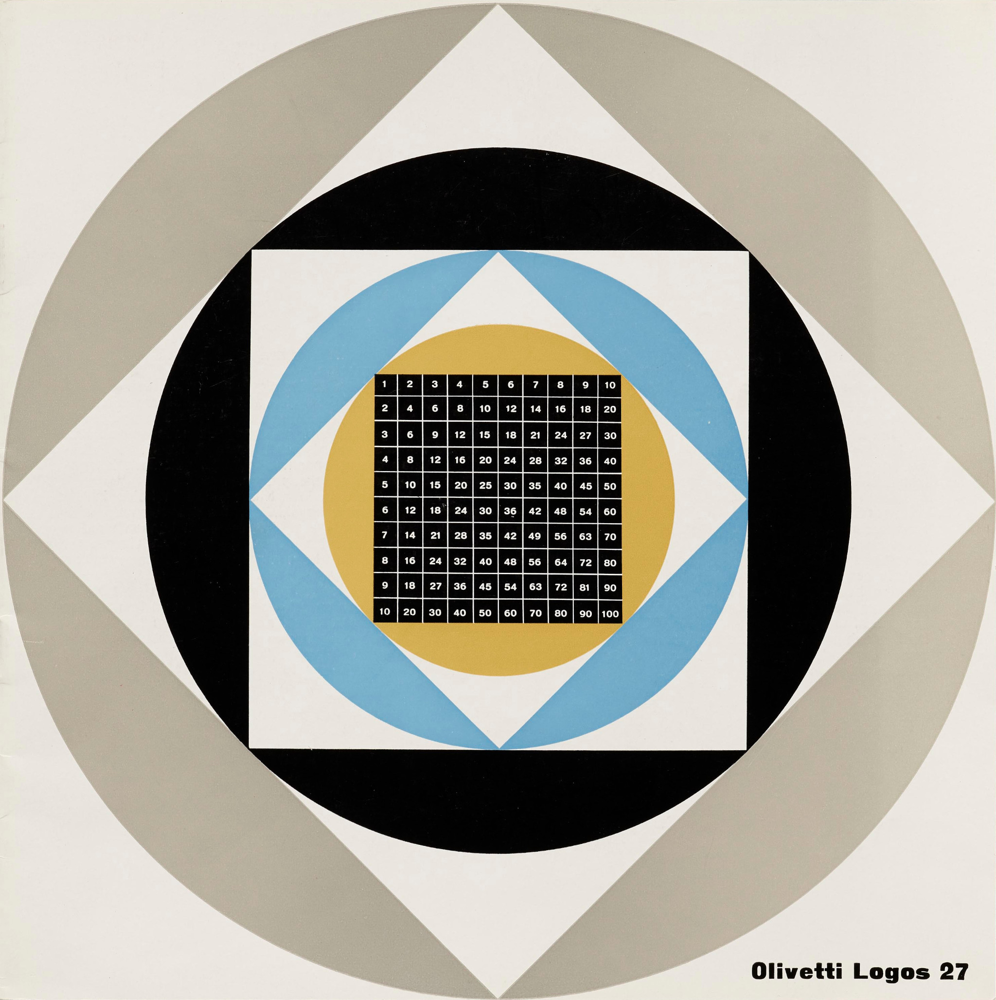
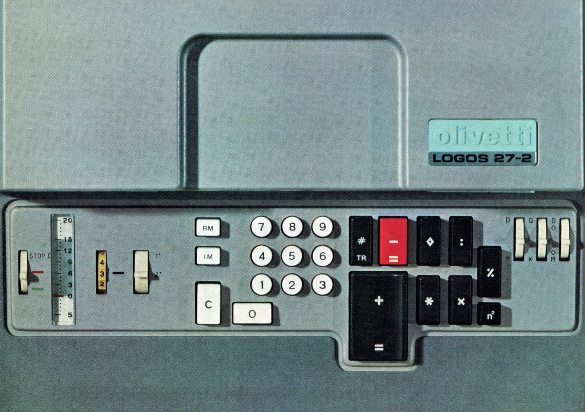
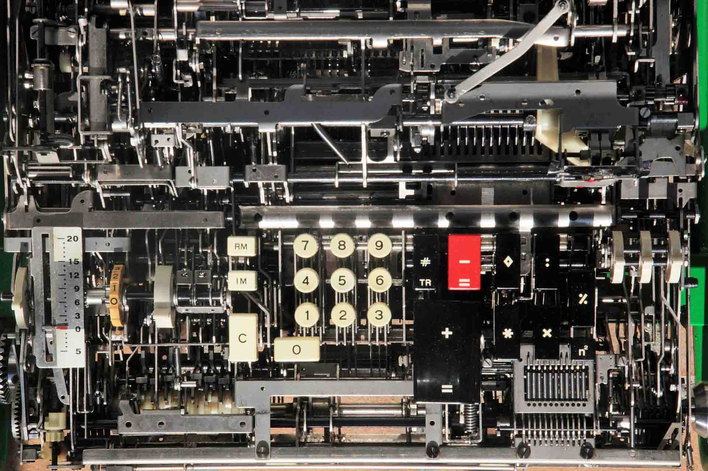
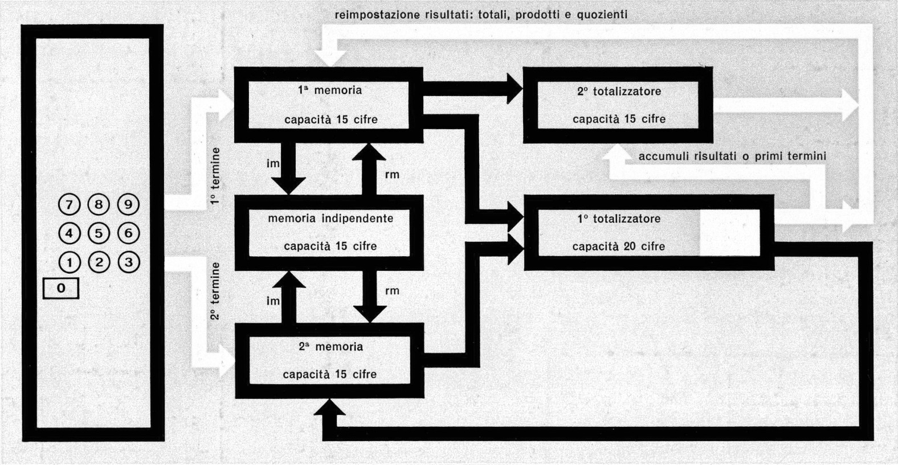

Logos 27

La Logos 27 in quattro articoli
> La “Logos” e il mercato delle calcolatrici. Un articolo di Francesco Mascaro, del Centro Studi Olivetti.
> Il progetto della “Logos”. Una nota di Teresio Gassino, che con un gruppo di collaboratori ha progettato questa macchina.
> Il design della “Logos”. Un articolo dell’architetto Ettore Sottsass jr., che ha realizzato la carrozzeria della nuova calcolatrice Olivetti.
> Dove si produce la “Logos”.
Fonte: Notizie Olivetti, n. 85, dicembre 1965, Ufficio Stampa Olivetti, pp. 32–49.

Logos 27-2, opuscolo informativo (1967).
In traduzione olandese qui rintracciabile l’opuscolo della Logos 27-1 (1966), con grafica di Giovanni Pintori. Una sequenza video presentava la Logos insieme ad altri prodotti Olivetti.
Fonte: Olivetti Logos 27-2: Internet Archive, Olivetti Logos 27 by Pintori, Giovanni: Letterform Archive consultati nel novembre 2020.

Philippe Bastide, “Ranimer une belle mécanique”.
Straordinario lavoro di studio, ingegneria inversa e rimessa in funzione di una Logos 27 da parte di un ingegnere e grande appassionato di macchine da calcolo meccaniche. Al lavoro hanno contribuito le conoscenze di Alain Billerey, collezionista di macchine da calcolo (riconoscibile qui mentre mostra in funzione Logos, Divisumma e Tetractys della sua collezione).
Fonte: L’oeil numérique (Internet Archive) archiviato nel luglio 2019.

La Logos in funzione.
L’ingegnere e appassionato di macchine da calcolo meccaniche Emanuele Vanzetti mostra in funzione la Logos 27-1 della sua collezione.
Fonte: video gentile concessione dell’ingegnere Emanuele Vanzetti, schema tratto dall’opuscolo della Logos 27-2 (vedi sopra).